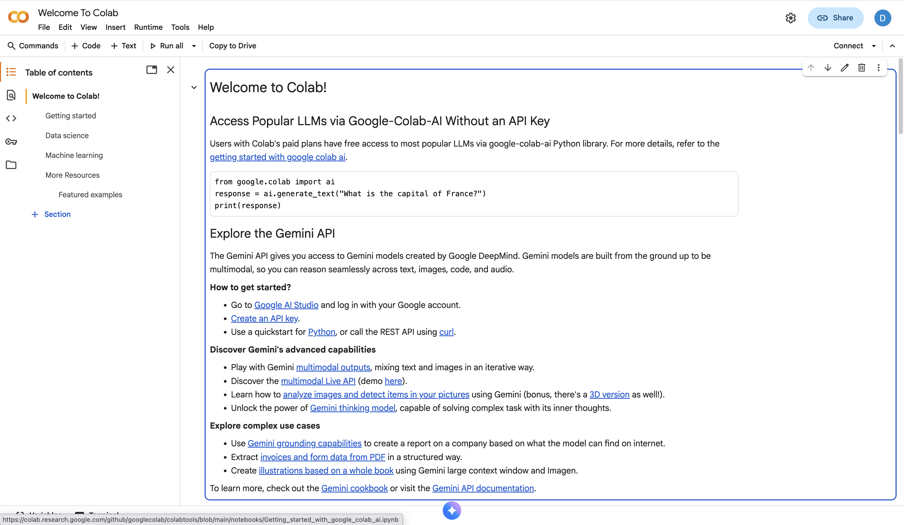

Introduction to Google Earth Engine
CoPhil EO AI/ML Training - Day 1, Session 4
EU-Philippines CoPhil Programme
Welcome to Session 4
Final Session of Day 1!
Google Earth Engine
Planetary-scale geospatial analysis in the cloud
Duration: 2 hours (Hands-on with Python API)
Learning Objectives
By the end of this session, you will be able to:
- Understand what GEE is and why it’s powerful
- Authenticate and initialize GEE Python API
- Access Sentinel-1 and Sentinel-2 imagery
- Filter image collections (spatial, temporal, property)
- Apply cloud masking to Sentinel-2
- Create temporal composites (median, mean)
- Calculate spectral indices (NDVI, NDWI)
- Visualize results with geemap
- Export data for further analysis
Session Roadmap
| Time | Topic | Duration |
|---|---|---|
| 00-15 min | GEE Overview & Authentication | 15 min |
| 15-55 min | Core Concepts & Sentinel Access (HANDS-ON) | 40 min |
| 55-60 min | ☕ Break | 5 min |
| 60-110 min | Processing & Visualization (HANDS-ON) | 50 min |
| 110-120 min | Export & Summary | 10 min |
Part 1: Google Earth Engine Overview
What is Google Earth Engine?
Cloud-Based Platform for Geospatial Analysis
- Massive data catalog (petabytes)
- Powerful compute (Google’s infrastructure)
- Free for research & education
- No download needed
- Process at scale

“Planetary-scale geospatial analysis”
Why GEE for This Training?
Addresses Key Challenges:
❌ Traditional: Download 100s of GB of Sentinel data
✅ GEE: Access entire archive without downloading
❌ Traditional: Need powerful computer for processing
✅ GEE: Google’s infrastructure does the work
❌ Traditional: Complex cloud masking & preprocessing
✅ GEE: Built-in algorithms & analysis-ready data
❌ Traditional: Time-series analysis is painful
✅ GEE: Designed for temporal analysis
Perfect for Philippine-scale analysis!
GEE Data Catalog
Datasets Available:
Satellite Imagery:
- Sentinel-1, 2, 3, 5P
- Landsat (entire archive!)
- MODIS
- Planet, SkySat (some)
- Many more…
Geophysical:
- Climate data
- Elevation (SRTM, ASTER)
- Weather data
- Population datasets
- Land cover products
Python API vs JavaScript Code Editor
JavaScript Code Editor
- Web-based IDE
- Interactive visualization
- Quick prototyping
- Built-in examples
Python API (Our Focus)
- Jupyter notebooks
- Integration with ML libraries
- Familiar Python ecosystem
- geemap package for visualization
Today: Python-only approach using geemap
geemap Package
Python package for interactive GEE mapping
- Built on ipyleaflet
- Interactive map visualization
- Layer controls
- Inspector tool
- Split-panel comparison
- Export functionality
- Makes Python GEE as easy as Code Editor
GEE Authentication
Sign Up for GEE
Before We Code
You need a Google Earth Engine account!
Steps:
- Visit signup page
- Use Gmail account
- Select “Research/Education”
- Wait for approval (usually instant)
Already have account? Great! Let’s authenticate.
Authentication Process
83d Open Notebook: Day1_Session4_Google_Earth_Engine.ipynb
Authentication Code:
Part 2: Core GEE Concepts
Key GEE Objects
ee.Image
- Single raster image
- Multiple bands
- Properties (metadata)
ee.ImageCollection
- Stack of images
- Time series
- Filter and reduce
ee.Geometry
- Points, lines, polygons
- Define areas of interest
ee.Feature / FeatureCollection
- Vector data with attributes
- Shapefiles, GeoJSON
Everything is server-side! Code describes operations, execution happens on Google’s servers.
Server-Side vs Client-Side
**Server-Side (ee.*):**
Fast, scalable
Filtering
Three main filter types:
1. Spatial (filterBounds):
2. Temporal (filterDate):
3. Property (filter):
Chain filters together!
Reducers
Aggregate data across space or time:
Temporal Reduction:
Most common: Median composite to remove clouds
Sentinel Data in GEE
Accessing Sentinel-2
83dLive Coding Exercise 1
# Define area of interest (Palawan)
aoi = ee.Geometry.Rectangle([118.0, 8.0, 120.5, 11.5])
# Load Sentinel-2 collection
s2 = ee.ImageCollection('COPERNICUS/S2_SR_HARMONIZED') \\
.filterBounds(aoi) \\
.filterDate('2024-01-01', '2024-12-31') \\
.filter(ee.Filter.lt('CLOUDY_PIXEL_PERCENTAGE', 20))
# Print collection info
print('Number of images:', s2.size().getInfo())
# Get first image
first_image = s2.first()
print('Bands:', first_image.bandNames().getInfo())Visualizing Sentinel-2
83dLive Coding Exercise 2
False Color Composite
83dLive Coding Exercise 3
Vegetation appears bright red!
Accessing Sentinel-1
83dLive Coding Exercise 4
# Load Sentinel-1 collection
s1 = ee.ImageCollection('COPERNICUS/S1_GRD') \\
.filterBounds(aoi) \\
.filterDate('2024-01-01', '2024-12-31') \\
.filter(ee.Filter.eq('instrumentMode', 'IW')) \\
.filter(ee.Filter.listContains('transmitterReceiverPolarisation', 'VV')) \\
.filter(ee.Filter.eq('orbitProperties_pass', 'DESCENDING'))
# Get median composite
s1_median = s1.select('VV').median()
# Visualize
vis_params_s1 = {'min': -25, 'max': 0}
Map.addLayer(s1_median, vis_params_s1, 'Sentinel-1 VV')☕ 5-Minute Break
Stretch Break
Stand up • Grab water • Back in 5 minutes
Part 3: Processing & Analysis
Cloud Masking
83dLive Coding Exercise 5
def maskS2clouds(image):
"""Mask clouds using QA60 band"""
qa = image.select('QA60')
# Bits 10 and 11 are clouds and cirrus
cloudBitMask = 1 << 10
cirrusBitMask = 1 << 11
# Both flags should be zero (clear)
mask = qa.bitwiseAnd(cloudBitMask).eq(0) \\
.And(qa.bitwiseAnd(cirrusBitMask).eq(0))
return image.updateMask(mask)
# Apply to collection
s2_masked = s2.map(maskS2clouds)
# Create cloud-free composite
composite = s2_masked.median()
Map.addLayer(composite, vis_params_rgb, 'Cloud-Free Composite')Understanding Bitwise Operations
How QA60 Band Stores Cloud Information:
QA60 value = 1024 (binary: 10000000000)
↑
Bit 10 set → Cloud present
Bit mask operation:
cloud_bit_mask = 1 << 10 # Shift 1 left by 10 = 1024
qa.bitwiseAnd(cloud_bit_mask) # Extract bit 10Why Bitwise?
- Efficient storage (multiple flags in one band)
- Bit 10 = Opaque clouds
- Bit 11 = Cirrus clouds
- Can check multiple conditions
QA60 Bit Flags:
| Bit | Flag |
|---|---|
| 10 | Opaque clouds |
| 11 | Cirrus clouds |
Example Values:
- 0 = Clear (00000000000)
- 1024 = Clouds (10000000000)
- 2048 = Cirrus (100000000000)
- 3072 = Both (110000000000)
Advanced Cloud Masking: SCL Band
Scene Classification Layer (SCL) - More Detailed Classification:
def mask_s2_clouds_scl(image):
"""Advanced cloud masking using SCL band"""
scl = image.select('SCL')
# SCL Classification Values:
# 3 = Cloud shadows
# 4 = Vegetation
# 5 = Bare soil
# 6 = Water
# 8 = Cloud medium probability
# 9 = Cloud high probability
# 10 = Thin cirrus
# 11 = Snow/ice
# Keep only clear land/water pixels
mask = scl.eq(4).Or(scl.eq(5)).Or(scl.eq(6))
return image.updateMask(mask).divide(10000)SCL vs QA60: SCL provides more granular classification but requires loading additional band
Calculating NDVI
83dLive Coding Exercise 6
Dark green = healthy vegetation
Other Indices
83dLive Coding Exercise 7
# NDWI (water)
ndwi = composite.normalizedDifference(['B3', 'B8']).rename('NDWI')
# NDBI (built-up)
ndbi = composite.normalizedDifference(['B11', 'B8']).rename('NDBI')
# Add to map
Map.addLayer(ndwi, {'min': -0.5, 'max': 0.5, 'palette': ['white', 'blue']}, 'NDWI')
Map.addLayer(ndbi, {'min': -0.5, 'max': 0.5, 'palette': ['green', 'gray']}, 'NDBI')Temporal Compositing
Compare different time periods:
# Dry season (Jan-Mar)
dry = s2_masked.filterDate('2024-01-01', '2024-03-31').median()
# Wet season (Jul-Sep)
wet = s2_masked.filterDate('2024-07-01', '2024-09-30').median()
# Calculate NDVI for both
ndvi_dry = dry.normalizedDifference(['B8', 'B4'])
ndvi_wet = wet.normalizedDifference(['B8', 'B4'])
# Difference
ndvi_change = ndvi_wet.subtract(ndvi_dry)
Map.addLayer(ndvi_change, {'min': -0.5, 'max': 0.5,
'palette': ['red', 'white', 'green']},
'NDVI Change')Green = vegetation increase, Red = vegetation decrease
Composite Methods Comparison
Different ways to create composites:
1. Median Composite
- Most common
- Reduces outliers
- Good for cloud removal
2. Mean Composite
- Average of all values
- Smooth results
- Can blur features
Greenest Pixel Composite Example
Philippine Rice Monitoring Application:
# Define Central Luzon rice area
rice_aoi = ee.Geometry.Rectangle([120.5, 15.0, 121.5, 16.0])
# Load Sentinel-2 for growing season
s2_rice = (ee.ImageCollection('COPERNICUS/S2_SR')
.filterBounds(rice_aoi)
.filterDate('2024-06-01', '2024-10-31') # Main rice season
.filter(ee.Filter.lt('CLOUDY_PIXEL_PERCENTAGE', 30))
.map(maskS2clouds))
# Add NDVI band to each image
def add_ndvi_band(image):
ndvi = image.normalizedDifference(['B8', 'B4']).rename('NDVI')
return image.addBands(ndvi)
s2_with_ndvi = s2_rice.map(add_ndvi_band)
# Create greenest pixel composite
greenest_composite = s2_with_ndvi.qualityMosaic('NDVI')
# Visualize
Map.addLayer(greenest_composite, vis_params_rgb, 'Greenest Pixel - Rice Season')Result: Captures peak rice biomass across entire growing season
Time Series Analysis
Extract time series at a point:
# Define point (Manila)
point = ee.Geometry.Point([121.0, 14.6])
# Function to add date and NDVI
def addNDVI(image):
ndvi = image.normalizedDifference(['B8', 'B4']).rename('NDVI')
return image.addBands(ndvi).set('date', image.date().format('YYYY-MM-dd'))
# Add NDVI to collection
s2_ndvi = s2_masked.map(addNDVI)
# Extract time series
ts = s2_ndvi.select('NDVI').getRegion(point, 10).getInfo()
# Convert to pandas DataFrame
import pandas as pd
df = pd.DataFrame(ts[1:], columns=ts[0])
print(df.head())Philippine Example: Rice Monitoring
83dLive Coding Exercise 8 - Complete Workflow
# Rice growing area (Central Luzon)
rice_aoi = ee.Geometry.Rectangle([120.5, 15.0, 121.0, 15.5])
# One year of data
rice_s2 = ee.ImageCollection('COPERNICUS/S2_SR_HARMONIZED') \\
.filterBounds(rice_aoi) \\
.filterDate('2024-01-01', '2024-12-31') \\
.filter(ee.Filter.lt('CLOUDY_PIXEL_PERCENTAGE', 30)) \\
.map(maskS2clouds)
# Monthly composites
def monthlyComposite(month):
start = ee.Date.fromYMD(2024, month, 1)
end = start.advance(1, 'month')
return rice_s2.filterDate(start, end).median() \\
.set('month', month)
# Create 12 monthly NDVI composites
months = ee.List.sequence(1, 12)
monthly_ndvi = ee.ImageCollection(months.map(monthlyComposite)) \\
.map(lambda img: img.normalizedDifference(['B8', 'B4']))
# Visualize (add to map, create chart, etc.)Part 4: Export & Integration
Exporting Data
Export to Google Drive:
Find exported file in Google Drive!
Export Options
Export Types:
toDrive()- Google DrivetoAsset()- GEE Asset (reuse in GEE)toCloudStorage()- Google Cloud Storage
Data Types:
- Image (raster)
- Table (vector)
- Video (time series animation)
Best Practices:
- Set appropriate
scale(resolution) - Define
region(don’t export globally!) - Use
maxPixelswisely - Check
crsmatches your needs - Monitor tasks in Code Editor
Integration with ML Workflows
GEE → Python ML Pipeline:
# 1. Process in GEE (fast, scalable)
composite = s2_masked.median()
ndvi = composite.normalizedDifference(['B8', 'B4'])
# 2. Sample training data
training = ndvi.sampleRegions(
collection=training_polygons,
scale=10
)
# 3. Export to Drive
ee.batch.Export.table.toDrive(
collection=training,
description='training_data',
fileFormat='CSV'
).start()
# 4. Download and use in scikit-learn/TensorFlow (Day 2!)geemap Advanced Features
Split-panel comparison:
Time slider:
Interactive charting, legends, colorbars, and more!
Philippine Case Studies
Case Study 1: Typhoon Impact Assessment
Scenario: Assess vegetation damage from Typhoon Odette (Rai) - December 2021
# Define affected region (Bohol & Cebu)
visayas_aoi = ee.Geometry.Rectangle([123.5, 9.5, 125.0, 11.0])
# Pre-typhoon (November 2021)
pre_typhoon = (ee.ImageCollection('COPERNICUS/S2_SR')
.filterBounds(visayas_aoi)
.filterDate('2021-11-01', '2021-11-30')
.filter(ee.Filter.lt('CLOUDY_PIXEL_PERCENTAGE', 30))
.map(maskS2clouds)
.median())
# Post-typhoon (January 2022)
post_typhoon = (ee.ImageCollection('COPERNICUS/S2_SR')
.filterBounds(visayas_aoi)
.filterDate('2022-01-15', '2022-02-15')
.filter(ee.Filter.lt('CLOUDY_PIXEL_PERCENTAGE', 30))
.map(maskS2clouds)
.median())
# Calculate NDVI change
ndvi_pre = pre_typhoon.normalizedDifference(['B8', 'B4'])
ndvi_post = post_typhoon.normalizedDifference(['B8', 'B4'])
ndvi_damage = ndvi_post.subtract(ndvi_pre)
Map.addLayer(ndvi_damage,
{'min': -0.5, 'max': 0.1, 'palette': ['red', 'yellow', 'white']},
'Vegetation Damage')Analysis:
- Red areas = severe damage
- Yellow = moderate damage
- Coastal coconut plantations heavily affected
- Rapid assessment for disaster response
Output: Damage map for NDRRMC
Case Study 2: Manila Bay Water Quality
Scenario: Monitor turbidity and suspended sediment in Manila Bay
# Define Manila Bay AOI
manila_bay = ee.Geometry.Polygon([
[[120.7, 14.4], [120.95, 14.4], [121.0, 14.65],
[120.75, 14.75], [120.7, 14.4]]
])
# Load Sentinel-2 (dry season 2024)
s2_manila = (ee.ImageCollection('COPERNICUS/S2_SR')
.filterBounds(manila_bay)
.filterDate('2024-02-01', '2024-04-30')
.filter(ee.Filter.lt('CLOUDY_PIXEL_PERCENTAGE', 20))
.map(maskS2clouds)
.median())
# Calculate Turbidity Index (Red/Green ratio)
turbidity = s2_manila.select('B4').divide(s2_manila.select('B3'))
Map.addLayer(turbidity,
{'min': 0.5, 'max': 2.0, 'palette': ['blue', 'cyan', 'yellow', 'red']},
'Manila Bay Turbidity')Application: Monitor rehabilitation progress, identify pollution sources
Case Study 3: Rice Paddy Phenology (Sentinel-1)
Scenario: Track rice growth stages using SAR in Central Luzon
# Define rice area (Nueva Ecija)
rice_region = ee.Geometry.Rectangle([120.8, 15.3, 121.3, 15.8])
# Load Sentinel-1 time series (wet season 2024)
s1_rice = (ee.ImageCollection('COPERNICUS/S1_GRD')
.filterBounds(rice_region)
.filterDate('2024-06-01', '2024-11-30')
.filter(ee.Filter.eq('instrumentMode', 'IW'))
.select('VH')) # VH sensitive to rice canopy
# Create time series chart
chart = geemap.image_series_by_region(
s1_rice, rice_region, reducer='mean',
scale=100, x_property='system:time_start'
)
chartPhenology Pattern:
- Low VH = flooding/transplanting
- Rising VH = vegetative growth
- Peak VH = heading/flowering
- Declining VH = maturity/harvest
Case Study 4: Mangrove Monitoring in Palawan
Scenario: Map and monitor mangrove forest extent in Puerto Princesa
# Define Palawan coastal area
palawan_coast = ee.Geometry.Rectangle([118.7, 9.5, 119.0, 10.0])
# Load recent Sentinel-2
s2_mangrove = (ee.ImageCollection('COPERNICUS/S2_SR')
.filterBounds(palawan_coast)
.filterDate('2024-01-01', '2024-12-31')
.filter(ee.Filter.lt('CLOUDY_PIXEL_PERCENTAGE', 20))
.map(maskS2clouds)
.median())
# Mangrove index: NDVI + NDWI combination
ndvi = s2_mangrove.normalizedDifference(['B8', 'B4'])
ndwi = s2_mangrove.normalizedDifference(['B3', 'B8'])
# Simple mangrove classifier
mangrove_mask = ndvi.gt(0.3).And(ndwi.gt(-0.1))
Map.addLayer(mangrove_mask.selfMask(),
{'palette': ['green']},
'Potential Mangrove Areas')
# Calculate area
mangrove_area = mangrove_mask.multiply(ee.Image.pixelArea()).reduceRegion(
reducer=ee.Reducer.sum(),
geometry=palawan_coast,
scale=10,
maxPixels=1e9
)
print('Mangrove area (hectares):',
ee.Number(mangrove_area.get('nd')).divide(10000).getInfo())Philippine Applications Summary
What GEE Enables for Philippines:
Disaster Response: - Flood mapping during typhoons - Damage assessment - Recovery monitoring
Agricultural Monitoring: - Rice area mapping (PRiSM program) - Crop health assessment - Yield prediction
Environmental Management: - Forest cover change - Mangrove monitoring - Water quality assessment
Urban Planning: - Land cover mapping - Urban expansion tracking - Infrastructure development
All at national scale, updated regularly, cloud-free!
Session Summary
What You’ve Learned:
✅ GEE platform & Python API authentication ✅ Core concepts: Image, ImageCollection, filtering, reducing ✅ Accessing Sentinel-1 and Sentinel-2 data ✅ Cloud masking (QA60 bitwise operations & SCL band) ✅ Calculating spectral indices (NDVI, NDWI, NDBI) ✅ Temporal compositing (median, mean, greenest pixel) ✅ Time series analysis and multi-temporal comparison ✅ Visualization with geemap ✅ Exporting data for ML workflows ✅ Philippine case studies (typhoon, water quality, rice, mangroves)
Q&A
Common Questions:
- GEE free tier limits?
- JavaScript vs Python trade-offs?
- How to handle large exports?
- Best practices for efficiency?
- Working with Landsat data?
- Custom algorithms in GEE?
- Integration with QGIS?
- Where to learn more?
Resources
Official Documentation:
https://developers.google.com/earth-engine
Python API:
https://geemap.org
Tutorials:
https://developers.google.com/earth-engine/tutorials
Community:
https://groups.google.com/forum/#!forum/google-earth-engine-developers
Awesome GEE:
https://github.com/giswqs/Awesome-GEE
Day 1 Complete!
Amazing Progress Today!
You’ve mastered:
- ✅ Copernicus & Philippine EO ecosystem
- ✅ AI/ML fundamentals for EO
- ✅ Python geospatial libraries (GeoPandas, Rasterio)
- ✅ Google Earth Engine Python API
Tomorrow: Apply these skills to real ML problems!
Day 2 Preview
Machine Learning for Earth Observation
Morning: - Random Forest classification - Training data preparation - Model evaluation - Palawan land cover mapping
Afternoon: - Deep learning introduction - CNN for imagery - Transfer learning - Building damage assessment
See you tomorrow! 🚀
Thank You!
Excellent Work Today!
Rest well.
Tomorrow we build AI models!
Day 1 Session 4 | Google Earth Engine | 20-23 October 2025